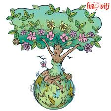

Dia Internacional de la tierra 22 de abril
Realizado por:
María Fernanda Muñoz Galindo
4°H
Especialidad:
Programacion
Submodulo:
Desarrolla aplicaciones Moviles
Docente:
Lic.Jose Antonio Gomez Hernandez
4°H
Programacion
Desarrolla aplicaciones Moviles
Lic.Jose Antonio Gomez Hernandez
Celebramos el dia internacional de la madre tierra para recordar que el planeta y sus ecosistemas nos dan la vida y el sustento. con este dia,asumimos, ademas, la responsabilidad colectiva, como nos recordaba la declaracion de Rio de 1992, de fomentar esta armonia cn la naturaleza y madre tierra. Este dia nos brinda tambien la oportunidad de concientizar a todos los habitantes del planeta acerca de los problemas que afectan a la tierra y a las diferentes formas de vida que en el se desrrollan. La Asamblea General de la Organización Internacional de las Naciones Unidas designó al 22 de abril como Día Internacional de la Madre Tierra. No obstante, el primer Día de la Tierra se celebró el mismo 22 de abril pero de 1970 en Estados Unidos tras la inciativa del entonces senador Gaylord Nelson.
El 22 de abril como el Día Internacional de la Madre Tierra, teniendo en cuenta que en muchos países se celebra el día de la Tierra y con el objetivo de alcanzar un justo equilibrio entre las necesidades económicas, las sociales y las ambientales de las generaciones presentes y futuras, y para promover la armonía con la naturaleza y la Tierra. Un poco en respuesta a esto, en 1970 se instituyó en Estados Unidos el Día Tierra, un año después de que se registrara un devastador derrame petrolero en las costas de Santa Bárbara, California, con la consecuente protesta de activistas y en especial un senador de la época, Gaylord Nelson, que en compañía de ciudadanos y organizaciones realizó una intensa campaña en pro de la protección del medio ambiente. Casi 20 años después, esta efeméride alcanzó dimensiones mundiales cunado la Organización de las Naciones Unidas (ONU), en el marco de una reunión sostenida en Rio de Janeiro en 1992, instituyó con beneplácito de las más de 100 naciones participantes, el 22 de abril como Día Internacional de la Madre Tierra. El Día de la Tierra (oficialmente Día Internacional de la Madre Tierra) es un día celebrado en muchos países el 22 de abril. Su promotor, el senador estadounidense Gaylord Nelson, instauró este día para crear una conciencia común a los problemas de la sobrepoblación, la producción de contaminación, la conservación de la biodiversidad y otras preocupaciones ambientales para proteger la Tierra. Es un día para rendir homenaje a nuestro planeta y reconocer a la Tierra como nuestro hogar y nuestra madre, así como lo han expresado distintas culturas a lo largo de la historia, demostrando la interdependencia entre sus muchos ecosistemas y los seres vivos que la habitamos.
Un cambio profundo comienza al iniciarse la agricultura -actividad artificial completamente ajena a los cazadores y los pastores-. El que cava y cultiva la tierra no pretende saquear la naturaleza, sino cambiarla. Plantar no significa tomar algo, sino producir algo. Pero al hacer esto, el hombre mismo se torna planta, es decir, aldeano, arraigando en el suelo cultivado. El alma del hombre descubre un alma en el paisaje que le rodea. Anunciase entonces un nuevo ligamen de la existencia, una sensibilidad nueva. La hostil naturaleza se convierte en amiga. La tierra es ahora ya la madre tierra. Anúdase una relación profunda entre la siembra y la concepción, entre la cosecha y la muerte, entre el niño y el grano. "La decadencia de occidente" (1918), Oswald Spengler.
El Día Internacional de la Madre Tierra es un recordatorio de que nuestro planeta necesita que todos y cada uno de nosotros se comprometa con esta causa y contribuya a avanzar en la dirección correcta. Llegó el momento de asumir el liderazgo para que unos a otros nos estimulemos con nuestro ejemplo. Pero la realidad es que ya está afectando las vidas de animales, personas de todo el mundo y de comunidades enteras.
El mundo necesita un cambio profundo. Este 22 de abril es una oportunidad para impulsar el Día Internacional de la Madre Tierra y mostrar a nuestras comunidades lo que hacemos, que queremos nuevas acciones encaminadas a luchar contra el cambio climático. Llegó la hora de tomar la iniciativa. Por la tierra
Vivir en armonia con la naturaleza es ser consciente de que vivimos en un planeta, llamado Tierra. Nosotros los “seres humanos” somos sus habitantes. Vivimos en ella y nos pertenece, por ser el lugar donde habitamos. Pero nosotros no dominamos la Vida y lo que hacemos al habitar la tierra es convivir. La pérdida de biodiversidad, la desertificación, el cambio climático y la interrupción de una serie de ciclos naturales se encuentran entre los costos de nuestra falta de respeto por la naturaleza y la integridad de sus ecosistemas y procesos de soporte vital. Como sugiere el trabajo científico reciente, se están transgrediendo varios límites planetarios y otros están en riesgo de serlo en un mundo sin cambios. Desde la revolución industrial, la naturaleza ha sido tratada como una mercancía que existe en gran medida para el beneficio de las personas, y los problemas ambientales se han considerado como solucionables mediante el uso de la tecnología. Para satisfacer las necesidades básicas de una población en crecimiento dentro de los límites de los recursos finitos de la Tierra, existe la necesidad de diseñar un modelo más sostenible para la producción, el consumo y la economía en general.
Los datos e información ambiental y macroeconómica de buena calidad son esenciales. Los riesgos y beneficios potenciales y los impactos ambientales de cualquier acuerdo deben ser revisados minuciosamente por todos los involucrados.
El gobierno y otras partes interesadas necesitan tener la capacidad técnica para equilibrar los diferentes intereses y permitir que se llegue a un consenso con todas las partes para el beneficio de todos, sin dañar el medio ambiente.
Esto requiere adoptar un enfoque de todo el sistema, observar el panorama general y tener toda la información para comprender completamente los impactos de los diferentes usos de la tierra. La gestión integrada de ecosistemas, como parte del enfoque de paisajes, ve el medio ambiente como una red compleja de partes conectadas y requiere un enfoque holístico.
1.ª Crear una Vicepresidencia de Sostenibilidad y Ministerio de Medio Ambiente.
2.ª Reforzar la Fiscalía Coordinadora de Medio Ambiente y Urbanismo y dotarla de más medios.
3.ª Reconocer y reforzar el papel de las organizaciones ambientales.
4.ª Establecer una Ley de Fiscalidad Ambiental que redistribuya la carga fiscal primando las buenas prácticas que promuevan el ahorro, la restauración ambiental y la creación de empleo ligado al medio ambiente.
5.ª Poner en marcha un plan ambicioso de mejora de la calidad del aire de ámbito estatal.
6.ª Prohibir de manera urgente el Bisfenol-A y otros disruptores endocrinos.
7.ª Prohibir el uso y abuso de animales con fines lúdicos o publicitarios a través de una Ley de Protección Animal.
8.ª Aprobar una Ley de Cambio Climático.
9.ª Realizar una auditoría energética de los costes reales del sistema como primer paso para poner en marcha una nueva política energética coherente que impulse el ahorro y la eficiencia energética, la producción descentralizada de energía renovable eliminando las subvenciones a los combustibles fósiles y acometiendo el cierre de las centrales nucleares tras 30 años de funcionamiento.
10.ª Aprobar una Ley de Movilidad Sostenible.
11.ª No construir más embalses ni trasvases.
12.ª Rediseñar una política agroalimentaria respetuosa con el medio ambiente.
13.ª No dar ni un paso atrás en la política de tolerancia cero contra la pesca ilegal —IUU—.
14.ª Apoyar a escala europea una política de Economía Circular ambiciosa que garantice una reducción del uso de recursos naturales por nuestra economía.